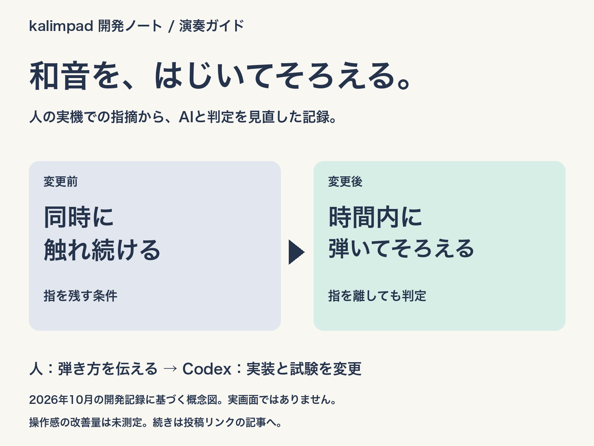

和音をはじいても、先へ進めるように。
kalimpadの演奏ガイドは、次に弾く音をパッドの光で案内します。開発中に考え直したのは、複数の音を弾く「和音」がそろったと判断する条件でした。画面をはじく楽器で、指を置いたままにすることまで求めてよいのか。この違いが実装に表れた、2026年10月15日から17日の開発記録を紹介します。
最初は、判定の時間を広げた。
10月15日の実機確認では、作り手から和音の判定が厳しすぎるという指摘がありました。開発記録には、1秒以内くらいにしてほしいという要望が残っています。Codexは、対象の音をそろえる時間を150ミリ秒から1秒へ変更しました。
ただし、時間を広げるだけでは、求められた弾き方を表せませんでした。そこには、和音の音を同時に触れている必要があるという条件が残っていました。
人が直したのは、「同時に」の意味。
続いて作り手が指定したのは、直前の一定時間内に対象の音がすべて押されていれば進むことでした。その時点の要望は1.5秒以内。押した指をすべて残しておくことではありません。
この訂正を受け、Codexは、指が今触れているかだけでなく、各音がいつ弾かれたかを使う判定へ変更しました。一音ずつはじいて指を離しても、時間内に和音の音がそろえば先へ進む形です。各音は、入力したときに鳴らす設計を維持しました。

AIへ渡された具体的な条件。
この回の記録で確認できるのは、実機で感じた厳しさ、和音として認める時間、離した指をどう扱うか、という具体的な条件です。会話全体や、図を渡した記録までは確認できません。実際の依頼文を推測して再現することは避けています。
人が弾き方と判定条件を指定し、Codexが実装と試験を更新しました。10月17日には、作り手の指定で判定時間を0.8秒へ調整した記録もあります。これは開発時に選んだ値であり、すべての人に最適だと測定した値ではありません。
「できた」を確かめる操作を、試験にした。
実装の試験では、次のような操作を区別しています。
- 和音の音を一つずつ弾き、その都度指を離す。
- 古くなった音は、そのまま成立条件に使わない。
- 期限を過ぎた音を弾き直し、時間内にそろうと進む。
- 次の和音へ進んだとき、前の和音で弾いた音を持ち越さない。
音が一つずつ鳴ることと、ガイドが次へ進むことを分けて確認できるようにした変更です。コード上の試験が通ったことは記録されています。一方、変更後の弾きやすさを数値で比較した結果や、すべての端末での実機受入結果は、この記録からは確認できません。
この開発から試せること。
AIと操作を作るときの提案として、「和音を弾く」のような一語を、指の動きに分けて渡してみてください。指を置き続けるのか、はじいて離すのか。途中で時間が空いたらどうするのか。今回の変更では、その違いを人が明確にしたことで、AIが変える判定も具体的になりました。